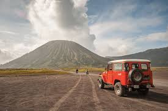

Temukan Surga Tersembunyi di Indonesia
Jelajahi keindahan alam dan budaya lokal yang menakjubkan.
Destinasi Populer

Gunung Bromo
Probolinggo, Jawa Timur
Nikmati pemandangan matahari terbit yang magis dari salah satu gunung berapi paling ikonik.

Kawah Ijen
Banyuwangi, Jawa Timur
Saksikan fenomena api biru langka dan danau kawah pirus yang menakjubkan di puncak Ijen.

Pulau Komodo
Nusa Tenggara Timur
Bertemu langsung dengan kadal purba raksasa di habitat aslinya dan jelajahi pantai pink.

Raja Ampat
Papua Barat
Surga bagi para penyelam dengan keindahan bawah laut yang tiada duanya di dunia.

Danau Toba
Sumatera Utara
Danau vulkanik terbesar di dunia dengan pemandangan menakjubkan dan Pulau Samosir di tengahnya.

Labuan Bajo
Nusa Tenggara Timur
Gerbang menuju Taman Nasional Komodo, terkenal dengan keindahan alam dan pemandangan lautnya.